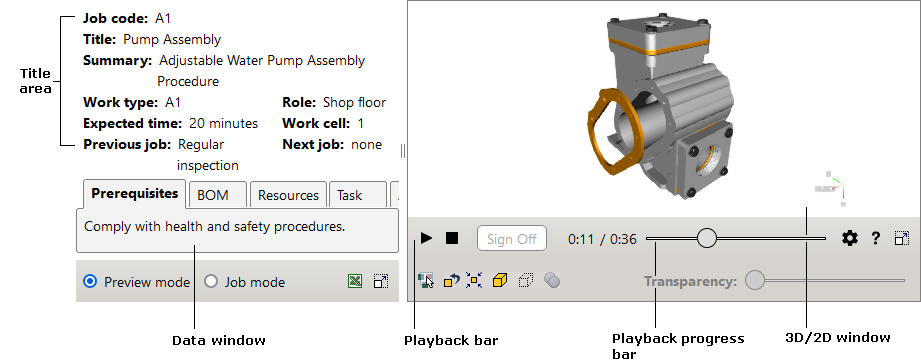

Il testo che contiene un collegamento a un'immagine 2D è sottolineato con una linea tratteggiata (ad esempio,
Il documento interattivo può essere utilizzato in due modi diversi:
L'interfaccia utente del documento interattivo è costituita da due aree di lavoro: finestra Dati e finestra 3D/2D. Ogni area di lavoro ha i propri elementi di controllo.
Per assistenza, fare clic sul pulsante Guida nell'angolo in basso a destra del documento interattivo.
|  |
La finestra dati contiene l'area del titolo e le seguenti schede: Prerequisiti, Distinta base, Risorse, Istruzioni e Documento.
L'area del titolo visualizza informazioni generali sulle istruzioni di lavoro. Ad esempio codice processo, tipo di lavoro e tempo previsto.
La scheda Prerequisiti descrive le condizioni che devono essere soddisfatte prima di avviare la procedura tecnica. La scheda è attiva alla prima apertura del documento interattivo.
La scheda Distinta base visualizza una distinta parti indentata. Ogni record della distinta base fornisce le seguenti informazioni su una parte: numero parte, descrizione, quantità e numero parte alternativa.
Fare clic sul record BOM per adattare ed evidenziare gli item corrispondenti nella finestra 3D.
Posizionando il puntatore su un record BOM, il record e gli item corrispondenti vengono evidenziati nella finestra 3D.
Facendo clic sul segno più si espande la gerarchia.
La scheda Risorse descrive le risorse necessarie per eseguire la procedura tecnica.
La scheda Istruzioni è costituita dalle seguenti sezioni: Attività corrente, Parti richieste, Risorse richieste. La sezione Attività corrente visualizza un testo per l'attività corrente.
Il testo può contenere collegamenti ipertestuali a item 3D e immagini 2D. Il testo che contiene un collegamento a un item 3D è sottolineato con una linea tratteggiata. Fare clic sul testo sottolineato per selezionare e adattare l'item corrispondente nella finestra 3D.
Il testo che contiene un collegamento a un'immagine 2D è sottolineato con una linea tratteggiata (ad esempio,  ). Fare clic sul testo sottolineato per aprire l'immagine corrispondente nella finestra 2D.
). Fare clic sul testo sottolineato per aprire l'immagine corrispondente nella finestra 2D.
La sezione Parti richieste visualizza i dati della distinta base solo per le parti che contengono collegamenti agli item 3D corrispondenti.
La sezione Risorse richieste visualizza le risorse necessarie per l'attività corrente.
La scheda Documento visualizza il testo completo delle istruzioni di lavoro.
Nella modalità Processo, l'utente può fare clic sul pulsante Disconnetti per passare all'attività successiva delle istruzioni. L'attività precedente visualizza l'ora e la data in cui è stato fatto clic sul pulsante Disconnetti per tale attività (ad esempio, Disconnetti: Venerdì 21 luglio 2010 12:47:10 PM). La visualizzazione dell'ora e della data è possibile solo all'interno della sessione corrente, poiché i dati non vengono memorizzati in nessun punto.
La finestra di messaggio Ispezione richiesta può essere visualizzata durante la riproduzione della procedura. L'attività corrispondente visualizza l'ora e i dati quando si fa clic sul pulsante Chiudi nella finestra di messaggio Ispezione richiesta (ad esempio, Ispezionato: Venerdì 21 luglio 2010 12:48:57 PM). La visualizzazione dell'ora e della data è possibile solo all'interno della sessione corrente.
Nella modalità Anteprima, facendo clic sull'attività richiesta della procedura essa viene evidenziata nella scheda Documento e si abilita la riproduzione della procedura. Nella modalità Processo, solo l'attività corrente è disponibile per la riproduzione.
Il testo del documento può contenere collegamenti ipertestuali a item 3D e immagini 2D (vedere la scheda Istruzioni).
La finestra 3D fornisce una rappresentazione 3D della procedura descritta nella scheda Documento. Nella finestra 3D, l'utente può riprodurre la procedura utilizzando la barra Riproduzione e navigare usando i pulsanti del mouse. Il localizzatore (ad esempio, treppiede) nell'angolo superiore destro della finestra 3D consente di determinare la posizione spaziale dell'unità o della parte.
Pulsanti per controllare la riproduzione della procedura nella finestra 3D.
| Comando | Finalità |
|---|---|
| Esegui | Avvia la riproduzione della procedura se è stata interrotta o messa in pausa. |
| Pausa | Arresta la riproduzione nello step corrente. |
| Stop | Arresta e riavvolge lo step corrente all'inizio. |
| Disconnetti |
Disponibile in modalità Processo. Attiva l'attività successiva: l'attività viene evidenziata nella scheda Documento e il momento corrispondente della procedura viene riprodotto nella finestra 3D. L'attività precedente nella scheda Documento visualizza l'ora e la data in cui è stato fatto clic sul pulsante Disconnetti per quell'attività. |
|
Impostazioni |
Mostra o nasconde l'elenco Impostazioni. Velocità. Imposta la velocità di riproduzione. Congela punto di vista. Se selezionato, blocca la telecamera sulla vista corrente, impedendo così lo spostamento della telecamera durante la riproduzione della procedura. Disattiva messaggi di avviso. Se selezionato, disattiva i messaggi di avviso della procedura durante la riproduzione. PMI. Se selezionato, vengono visualizzati i dati PMI. Product Manufacturing Information (PMI) rappresenta gli attributi non geometrici nel progetto 3D computerizzato necessario per la produzione di componenti o sottosistemi di prodotto. Illuminazione scena. Definisce il numero e la posizione delle sorgenti di luce per illuminare il modello nella finestra 3D. Le posizioni relative delle sorgenti di luce vengono visualizzate a destra dell'elenco. Tutte le sorgenti di luce si spostano con il visualizzatore. Mostra cubo di navigazione. Mostra o nasconde il Cubo di navigazione nella finestra 3D. Il Cubo di navigazione ha tre diversi tipi di aree hotspot: Spigolo, Vertice e Faccia. Quando si posiziona il puntatore sul bordo, sul vertice o sulla faccia del Cubo di navigazione, viene evidenziata l'area corrispondente. Con queste aree è possibile passare da una vista standard all'altra ed eseguire rotazioni. Mostra spigoli superficie. Se selezionato, consente la visualizzazione dei contorni della superficie nella finestra 3D. Antialiasing. Attiva una tecnica per ridurre al minimo gli elementi di distorsione nella finestra 3D. Occlusione ambientale. Attiva la tecnica di rendering e ombreggiatura dell'occlusione ambientale nella finestra 3D. Modalità di selezione. Specifica la rappresentazione degli oggetti per la selezione nella finestra 3D. Evidenzia con colore: viene evidenziata la selezione. Oggetti selezionati a raggi X: gli oggetti appaiono in grigio e traslucidi, ad eccezione della selezione. Shell traslucida: il guscio esterno dell'intero modello appare trasparente, mentre gli oggetti interni non selezionati vengono nascosti. Contorno degli oggetti al passaggio del mouse. La selezione viene contornata. |
Mostra l'avanzamento della riproduzione. Facendo clic sulla barra è possibile scegliere il momento desiderato della procedura.
Pulsanti per adattare, mostrare, nascondere e rendere trasparenti gli oggetti selezionati nella finestra 3D.
| Interfaccia utente | Pulsante | Finalità |
|---|---|---|
| Mostra oggetti selezionati in una finestra separata |

|
Se abilitato, visualizza la selezione nella finestra 3D secondaria. |
| Ignora trasparenza |

|
Se abilitato, consente di fare clic sugli item trasparenti nella finestra 3D, quando gli item trasparenti diventano insensibili al clic dell'utente. |
| Ripristina tutto |

|
Mostra tutti gli oggetti nascosti e semitrasparenti. |
| Adatta |

|
Adatta il riquadro di delimitazione degli item selezionati alla finestra 3D. |
| Mostra |

|
Rende visibili gli item selezionati precedentemente nascosti nella finestra 3D. |
| Nascondi |

|
Nasconde gli item selezionati nella finestra 3D. |
| Nessuna selezione |

|
Deseleziona tutti gli item. |
| Trasparenza | Consente di impostare il valore di trasparenza per gli item selezionati. Il comando Trasparenza è disponibile se uno o più item sono selezionati nella finestra 3D. |
Gli oggetti selezionati vengono visualizzati nella finestra 3D secondaria.
| Interfaccia utente | Pulsante | Finalità |
|---|---|---|
| Imposta centro |

|
Consente di specificare il centro di rotazione per il modello 3D. |
| Mostra centro di rotazione |

|
Consente di nascondere o visualizzare il centro di rotazione. |
| Includi tutto |

|
Rende l'intero modello 3D completamente visibile nella finestra 3D. |
| Allinea orizzonte |

|
Posiziona l'asse orizzontale (ma non longitudinale) della telecamera parallelamente al piano orizzontale nel sistema di coordinate. |
| Misura |

|
Apre lo strumento per misurare una distanza. Nella finestra 3D è sufficiente fare clic una volta su un punto, quindi fare nuovamente clic sul secondo punto. Dopodiché dovrebbe essere visualizzata la distanza tra i due punti rossi. Per ottenere la distanza tra i punti proiettati sul piano verticale o orizzontale, selezionare il nome del piano di proiezione dall'elenco. Per modificare l'unità di lunghezza, selezionare Unità. Per impostare la lunghezza delle linee direttrici, trascinare il dispositivo di scorrimento H. Selezionare Mantieni visibile per rendere visibile la linea di quota dopo la chiusura dello strumento di misurazione. Per impostare nuovi punti, fare clic su Cancella o premere il tasto Esc, quindi specificare i punti nella finestra 3D.
AVVISO Non utilizzare i risultati di misurazione direttamente nel workflow poiché l'illustrazione 3D potrebbe differire dal prodotto effettivo. Per ottenere le quote necessarie per la produzione o l'assistenza, fare riferimento alla documentazione tecnica pertinente. |
| Piano di sezione |

|
Visualizza il modello come se fosse tagliato da un piano. Utilizzare i controlli per impostare (Sinistra, In alto, Davanti) e ruotare (X e Y) il piano di sezione. Per spostare il piano di sezione, trascinare il dispositivo di scorrimento D. Utilizzare Ribalta per riflettere la sezione. Selezionare la Modalità Precisa per migliorare la precisione dei cursori. Selezionare Mantieni visibile per rendere visibile la sezione dopo la chiusura dello strumento. Per spostare il piano di sezione al centro della selezione, fare clic su Ripristina. |
| Anteriore |

|
Mostra il modello frontalmente. |
| Posteriore |

|
Mostra il modello dalla parte posteriore. |
| Sinistra |

|
Mostra il modello dal lato sinistro. |
| Destra |

|
Mostra il modello dal lato destro. |
| Superiore |

|
Mostra il modello dall'alto. |
| Inferiore |

|
Mostra il modello dal basso. |
| Isometrica |

|
Mostra il modello in una vista isometrica. |
Fare clic con il pulsante destro del mouse in un punto qualsiasi della finestra 3D per accedere al menu sensibile al contesto.
| Comando | Finalità |
|---|---|
| Ripristina | Ripristina la vista dello step. |
| Includi tutto | Rende gli item completamente visibili nella finestra 3D. |
| Informazioni | Mostra le versioni del documento interattivo, del visualizzatore 3D e del visualizzatore 2D. |
La finestra 2D visualizza immagini vettoriali e raster associate alla procedura descritta nella finestra Dati.
La finestra 2D sostituisce la finestra 3D quando si fa clic su un collegamento ipertestuale a un'immagine 2D nella finestra Dati (scheda Istruzioni o scheda Documento).
Fare clic con il pulsante destro del mouse nella finestra 2D per accedere ai comandi sensibili al contesto disponibili. L'elenco dei comandi varia in base al visualizzatore 2D utilizzato nella finestra 2D.| Operazione | Azione dell'utente |
|---|---|
| Sposta | Spostare il mouse tenendo premuto il pulsante sinistro. |
| Zoom | Scorrere la rotella del mouse in avanti o indietro. |
| Guida |

|
Fornisce il sistema della Guida per l'interfaccia utente. |
| 3D |

|
Apre la finestra 3D. |